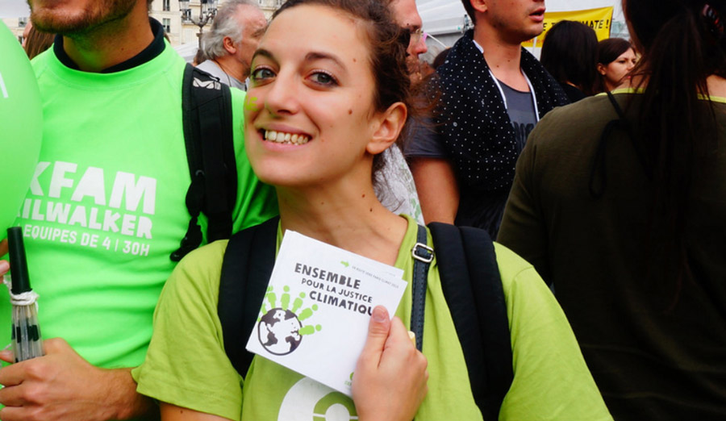
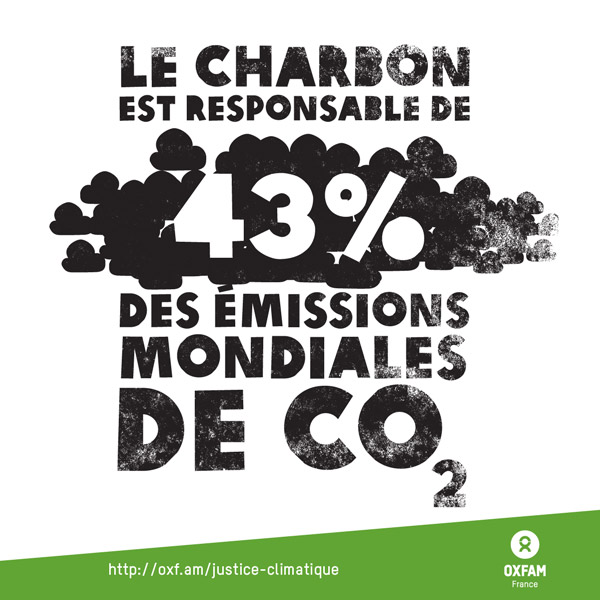
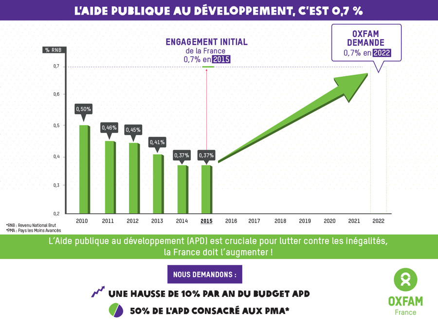

Images de campagne et infographie
de 2013 à 2016
Oxfam est une confédération composée de vingt organisations indépendantes de même sensibilité qui agissent « contre les injustices et la pauvreté dans le monde ».
J'ai commencé a travailler pour Oxfam France en 2013 pour leur campagne Banque, la faim leur profite bien.
Ma mission fut de créer l'image de campagne qui allait être utilisée sur différents support. Le but de l'image était de faire prendre conscience et d'informer sur les pratiques d'une majorités de banques qui spéculent sur les matières premières agricoles sur prêtent de l'argent à des entreprises productrices d’agrocarburants.
Suite à cette première expérience de travail, j'ai continué d'apporter mes services et mon expertise à Oxfam jusqu'en 2016 sur différentes campagnes.
Justice fiscale
En 2014, j'ai été missionné par Oxfam France pour réaliser l'infographie, le dépliant et les images web de la campagne La Taxe sur les Transactions Financières.

Oxfam France a régulièrement fait appel à moi pour réaliser des infographies pour alerter, faire prendre conscience d'enjeux fiscaux importants dans la lutte contre les inégalités.
Urgence climatique
En 2014, Oxfam alertait sur les urgences liées au climat et m'a demandé de réaliser les infographies et les dépliants qui allait servir d'éveil de consciences.

En 2015, il s'agissait de réaliser des images pour dénoncer les centrales à charbon détenues par la France en France et à l'étranger, responsage de 43% des émissions mondiales de CO2.

Solidarité
Ayant à cœur la solidarité avec les pays les moins développés, Oxfam m'a régulièrement demandé de travailler sur des campagnes en faveur de l'APD (l'Aide Publique au Développement). L'APD est une aide nécessaire que versent les états développés aux pays en voie de développement. Souvent ce budget subit les coupes du gouvernement alors que l'on sait que cette aide est nécessaire et produit du développement.

Depuis Septembre 2016, j'occupe un poste d'enseignement en design graphique numérique. Dès lors, j'ai dû refuser certaines missions faute de temps pour les réaliser. C'est tout naturellement qu'Oxfam s'est tourné vers d'autres graphistes pour la réalisation de ses images de campagne. Je partage les valeurs défendues par Oxfam et je n'hésite pas à trouver des liens entre ma pratique d'enseignement et la lutte contre les inégalités sociales. C'est aussi pour cela que nous avons fait travailler en mai 2017 nos étudiants du BTS design graphique de Boulogne-Billancourt sur la réalisation de vidéos de sensibilisation avec Oxfam. (à voir dans la section encadrement de projets de ce site).